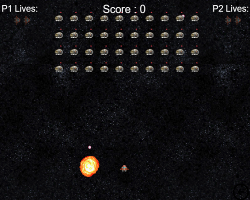

Gameplay
Overview
The Starship of Doom Features a linear playthrough of simple, multiplayer levels. It follows a straightforward format of a basic level followed by a boss battle, repeated a number of times.
In order to complete the level, players must successfully destroy all of the on-screen enemies meanwhile avoiding their return fire. To defeat a boss, players must lower his health to 0, where he will be destroyed, leaving
the unique power up for one of the players to collect.
Each basic level builds upon the last, making slight gameplay changes and also gradually increasing the difficulty level. Each boss has a unique ability, which can be used by one of the players if the can successfully defeat the boss.
The game culmiates in a final battle between the two players, who up until this point have worked together.
Level Design
Level 1 - The foundation of all basic levels, the first stage in the game can be seen at the top of the page. Both players start at the bottom of the game screen, with four rows of enemies in front of them. These basic
opponents move side to side while firing towards the players. Together, the users must fire back in an attempt to destroy all of them. Only one shot is needed to destroy each enemy, making them relatively easy to defeat, but
strong in numbers. Once all the opponents have been destroyed, the game transistions to the next boss level.
Boss 1 - The first boss won't be much of a challenge. This enemy has an increased move speed, making the players have to time their shots much more effectively. Although not posing much a threat,
this opponent will prove difficult to beat with his speed.
Level 2 - The second level adds a different enemy to game, replacing the bottom row of the orginal enemy type. These new enemies are also slightly different, with a new appearence and the resilience
to take an addditional hit before being destroyed, which resluts in an increased difficulty.
Boss 2 - This adversary has the ability to not only shoot one bullet at a time but three. This spread shot covers a wider span, making it much harder to avoid. Players will have to manouvere carefully to avoid being hit.
However, if successfully aqquiring this ability, it can prove very useful in defetaing the basic grunts in the game.
Level 3 - Within level 3 more enemies are added to the game, one row of original enemies and another row of the stronger enemy type. This makes the game more frantic, now that players not only have two power ups, but
should be more familiar with games controls.
Boss 3 - The penultimate boss has a shield attached to it. This means the player will have to destroy the bosses shield before they can do damage to the boss itself. This will also prepare the players for the new enemies introduced in the last base level, as they can fire at an increased rate.
Level 4 - The final base level introduces yet another enemy type. Having a higher rate of fire and more health, these will replace the original enemies. This will make the game rather difficult, as the players
begin to reach the games finale.
Boss 4 - The last boss battle will be the most difficult. It will have a combination of all the defeated boss' abilities.
This will be the ultimate test for players, having to use the power ups obtained and knowledge of the game to defeat the final boss.
Final Battle - In a late twist, players will find themselves having to play one final stage, a battle against one another. Each player will keep the power ups they obtained throughout the game, which may prove
advantageous. With each player having three lives, it will be the chance to prove who is the better player.
Power-Ups
There are three possible upgrades that can be selected before each level, provided that they have been unlocked. They are speed, spread-shot, and shield.
The first speds up the player at the same rate as the boss it was acquired from. The spread-shot shoots 3 bullets but at a lower fire rate. Shield gives protection for 5 hits which could be very helpful for large barage of enemies.
The image below shows the selection screen for the upgrades. The arrow indicates which one is shown.

An illustration of the spread shot working:

The non-upgraded model can also be chosen as it also has advantages. For example in the level below, it is small enough to pass through the line of fire.